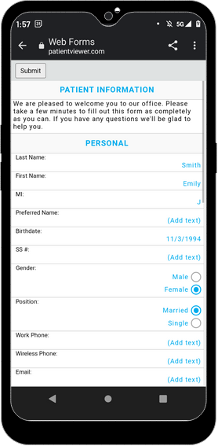

Web Forms: What Patient Sees
In Web Form Setup, click Navigate to URL(s).

Web forms can be viewed on a desktop (see above) or on a mobile device (see below). The view is responsive and will automatically detect the user's device and adapt accordingly.
Fields
Language: If sheets have Language Translations added, a Language dropdown will be visible allowing patients to select their preferred language.
Prev / Next: Use these to nagivate forms that are linked together. On desktop, all forms will list on the left, with unfilled forms marked as new.
Submit: Click to submit forms. Required fields are verified before sending. If any required fields are not filled in, they will turn red. On mobile, Submit is only enabled on the last form.
Filling Out the Form
- Web Form Setup determines Web Form settings such as whether patient Last Name, First Name, and Birthdate is inherited on 'next' forms, whether there are 'next' forms, the clinic associated to the web form, whether a redirect occurs after submit, and whether typed signatures are allowed. These settings come through to the web form via the URL.
- Pale yellow areas indicate where the patient should enter information.
- Birthdate validation is based on Windows region settings (format, date format) for the office. To import patient birthdates successfully into Open Dental, make sure the region settings expected on the web form match the region settings on the workstation running Open Dental.
- If web form signatures is turned on, patients can electronically sign web forms using a mouse or stylus, or they can opt to type their name. When the form is imported into the database by the office, a date stamp will appear in place of the signature. To erase a signature, click Clear. To type, check Enable typed signature, then enter the Full Name.

- Font support is dependent on the browser used to view the form. If the browser doesn't support a font used in the form, a supported font will be substituted.
- The form will be pure HTML with a little bit of JavaScript to validate certain fields.
- Free-form drawing will not work.
Troubleshooting
In Mobile View, when a patient clicks (Add text) the screen darkens and patient is forced to scroll way down to find the text entry popup.
You have most likely embedded your web form in an iFrame. 2 options.
- Do not embed in an iFrame, just navigate the patient directly to the link provided by Open Dental.
- Call support so we can evaluate the height setup of your iFrame in your HTML source and help you format your iFrame in a way that alleviates this issue.
Would a patient (or parent/guardian) be able to digitally sign a web-based consent form?
The practice would do better to have the patient (or parent/guardian) complete the document online, then sign it in the office, rather than online.